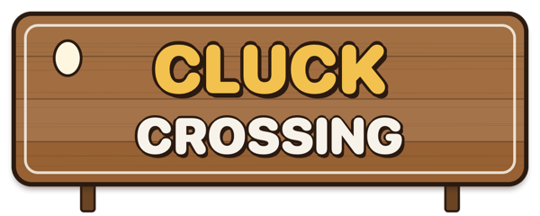
Cross the farm road.
Keep the eggs.
A brave hen, a busy county road and a whole basket of eggs. Hop lane by lane past tractors, milk vans and combines, then roost on the hay strip before the next one rolls in.
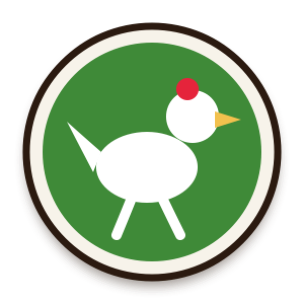
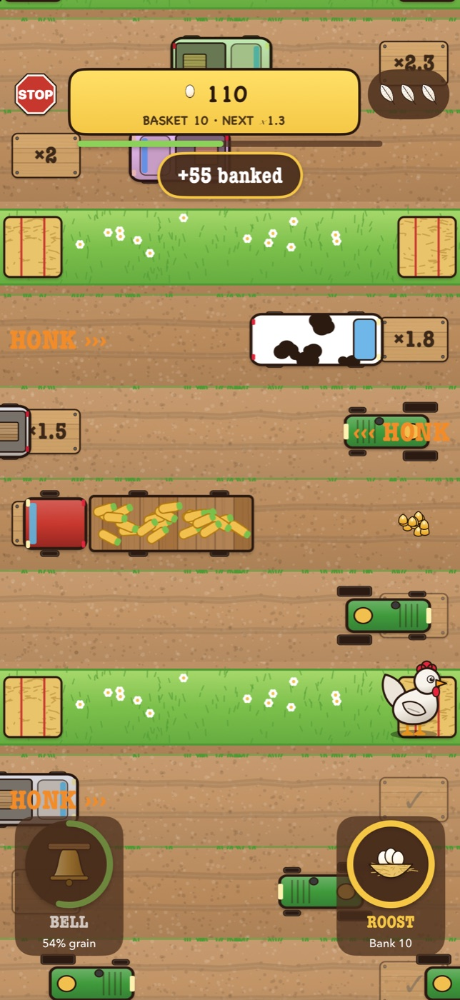
A barnyard arcade
Cluck Crossing starts on a sleepy meadow lane and ends in a foggy hollow full of fast tractors. Every district adds a new hazard, so your skill grows with the farm.
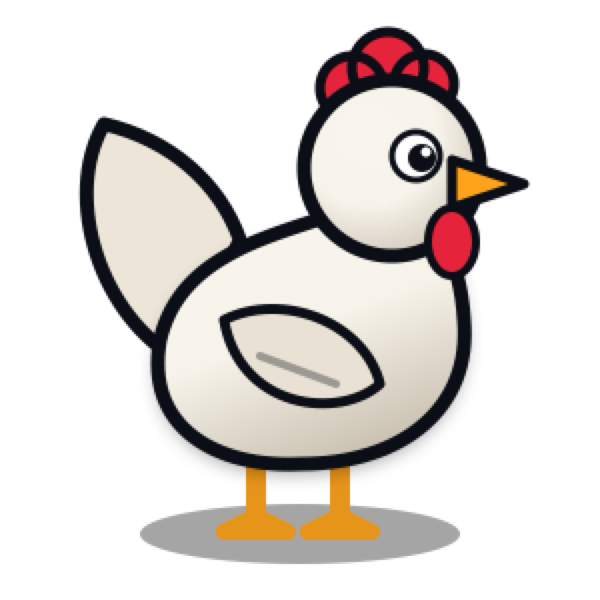
Easy to start
Tap to hop, swipe to sidestep. The first crossings are slow and wide, so you can learn the rhythm of the road.
Hard to master
The longer you go without roosting, the more each lane is worth. Push your luck, or bank it on the next hay strip.
Fair and offline
Coins are earned only by playing and are spent on gear and hens. No ads, no purchases, no real money anywhere.
Follow the signs
Every crossing is a short, tense trip from the meadow to the coop.
Five rules of the road
Each one changes how you read the road, and they work together.
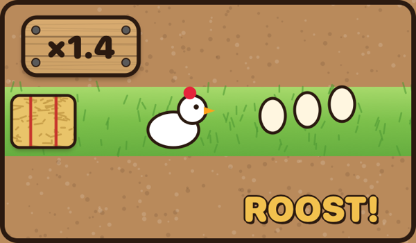
Basket Climb & Roost
The multiplier climbs with every lane in a streak. Only roosting on a hay strip makes it safe.
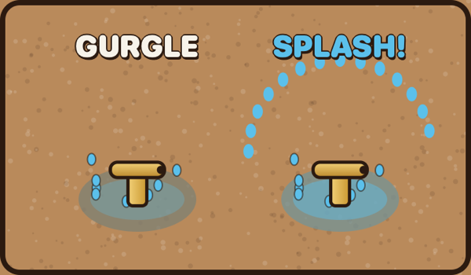
Sprinkler Bursts
Sprinklers gurgle, then shoot a jet of water. Step aside and wait for them to stop.
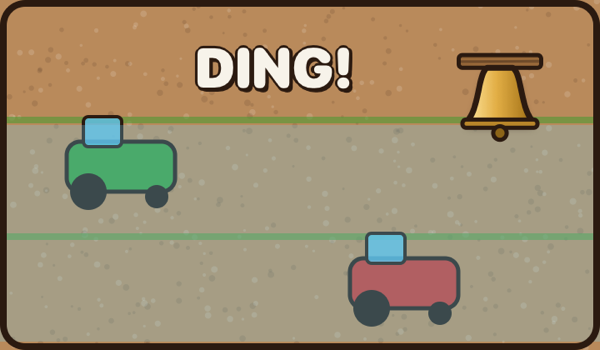
Farm Bell
Grain fills the bell. Ring it to hold three lanes, then cross before they rush again.
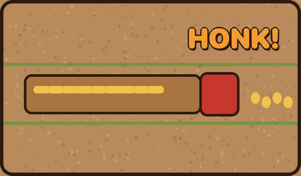
Corn Truck Spill
A honk warns of a long truck. It spills corn: grain, coins and cooler feet.
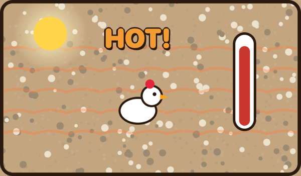
Hot Gravel
On sunbaked roads your feet heat up. Wait too long and you hop forward on your own.
Six hens, five districts
Every hen brings her own perk. Thirty crossings lead from Meadow Lane to Foggy Hollow.
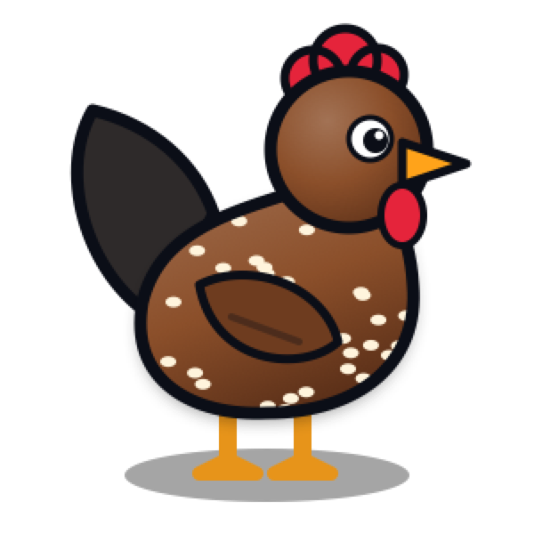
DotStarts with a half-full bell SunnyFeet heat 20% slower
SunnyFeet heat 20% slower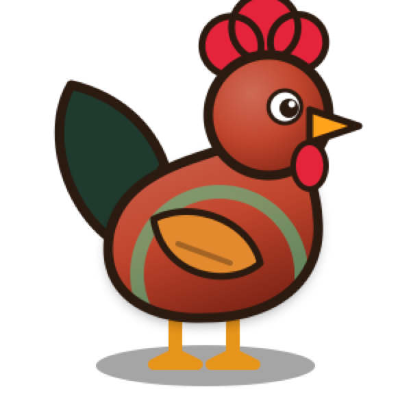
CometMultiplier climbs faster InkwellLonger shield after a bump
InkwellLonger shield after a bump DuchessOne extra feather
DuchessOne extra feather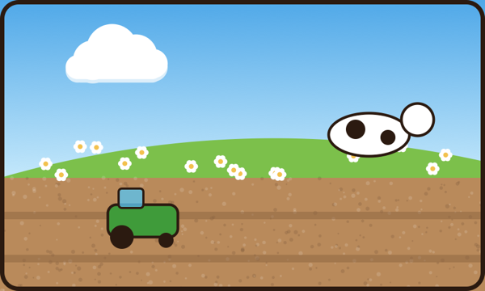
Meadow LaneLearn the rhythm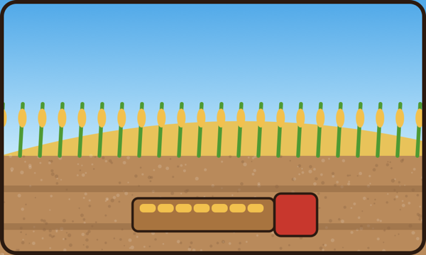
Harvest RoadCorn trucks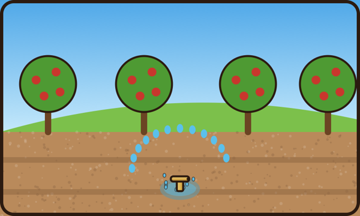
Orchard RowSprinklers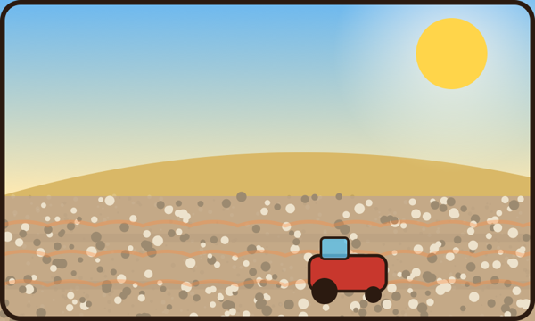
Sunbaked GravelHot gravel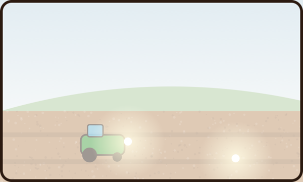
Foggy HollowOnly fog lights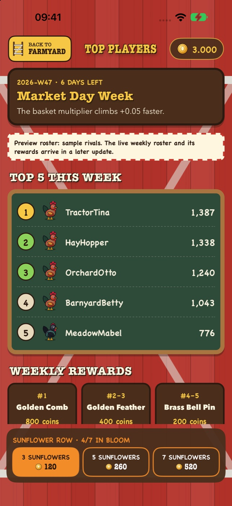
Farm Week
Each week brings a new rule for every run: Corn Harvest, Bell Ringer, Egg Basket or Market Day week.
Sunflower Row. Every day you play, a sunflower blooms along the fence. Grow 3, 5 or 7 in a week to collect a coin bundle.
Top Players. See the five highest-scoring Cluck Crossing players in the live online leaderboard. An internet connection is required to load scores. Only players with a recorded score appear.
A walk around the farm
Real captures from the game.
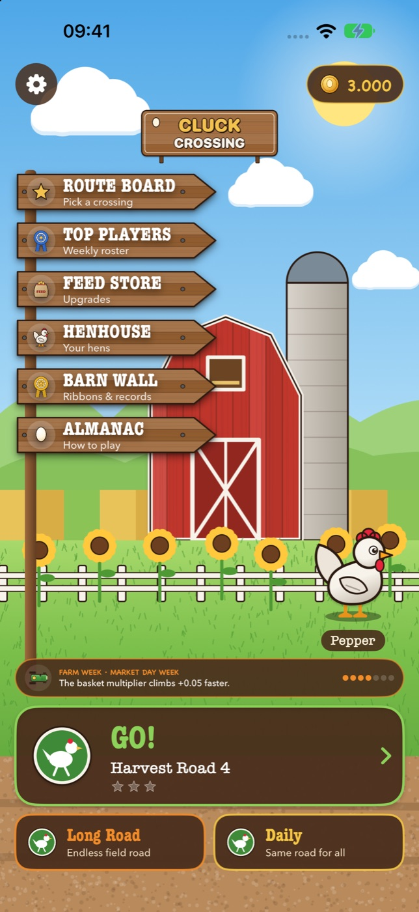
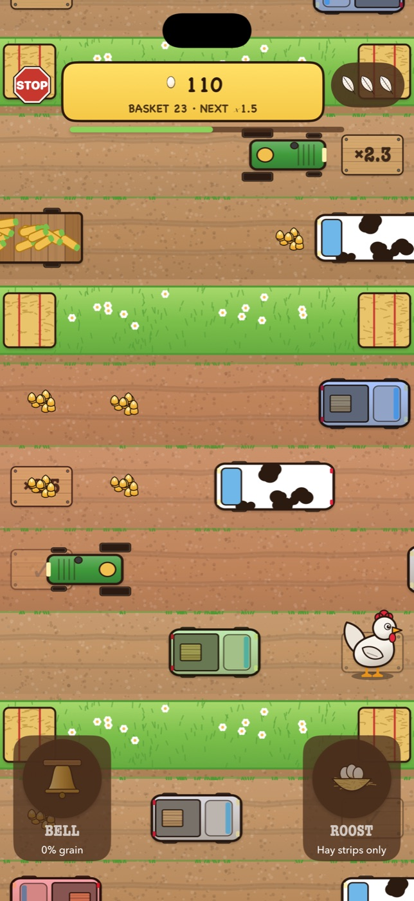
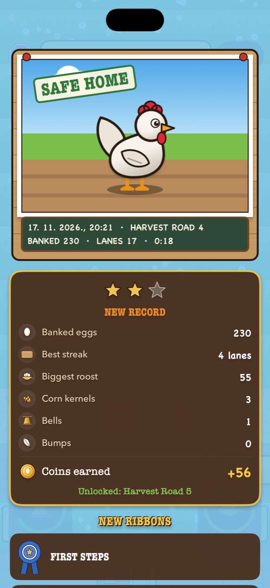
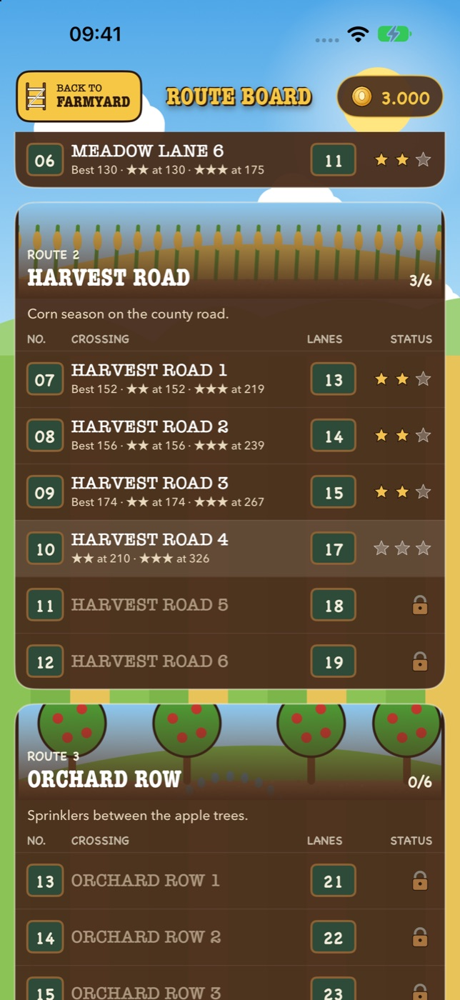
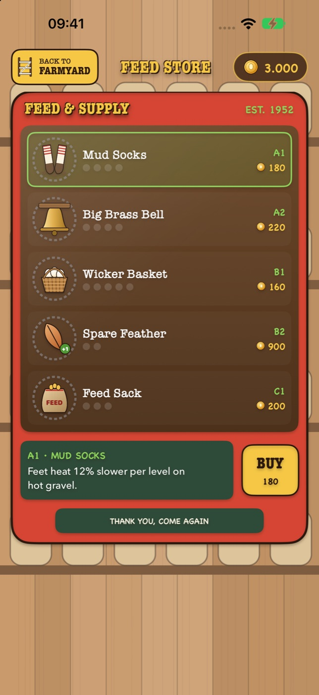
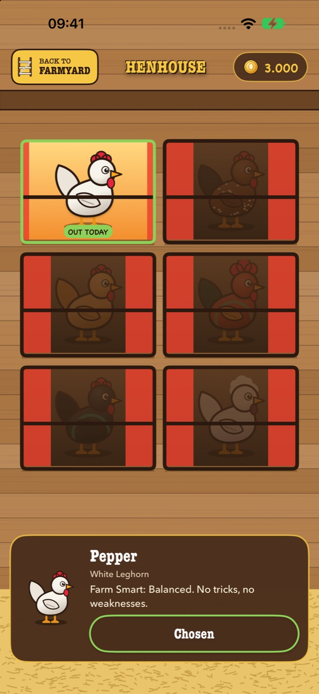
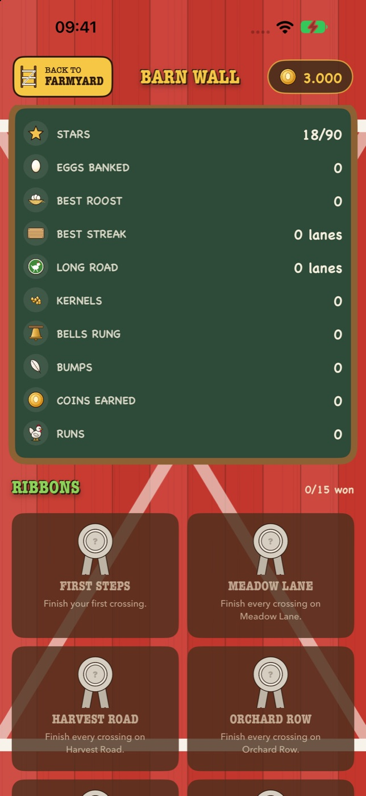
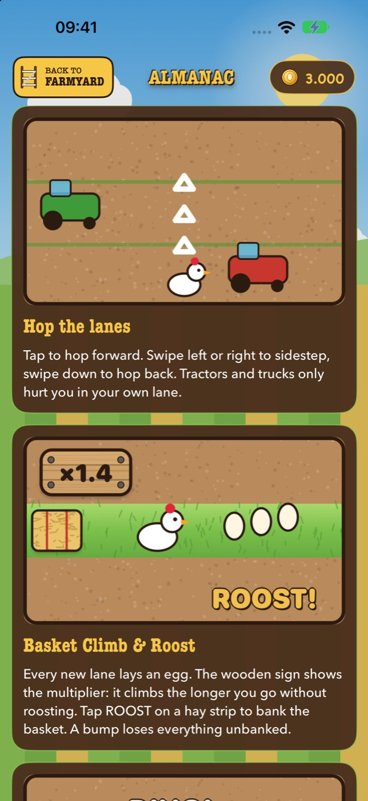
Made for iPhone
Privacy Policy
Last updated: November 18, 2026
Cluck Crossing ("the app") is designed to respect your privacy.
Data we collect
Online features use an anonymous Supabase account to associate your player profile and scores with your installation. The app does not ask for your name, email address or password. We do not use advertising or cross-app tracking.
Data used by online features
For Top Players, the app sends an installation identifier (IDFV), your chosen player name and avatar, and completed game scores with their submission times. Supabase uses these details to maintain your player profile and rank your recorded best score. The leaderboard displays your chosen player name, avatar and best score.
Data on your device
Your gameplay progress, coins, stars, upgrades, hens, settings and local records are saved on your iPhone. Deleting the app removes local data. Online profile and leaderboard records are stored by Supabase and are not necessarily removed when you delete the app. To request deletion of online records, contact support.
Children
The app is suitable for all ages. Online features collect the limited technical and gameplay data described above, including when used by children. A parent or guardian may contact support with privacy questions or a deletion request.
Changes
We may update this policy when the app or its online services change. The latest version will be posted on this page.
Contact
Questions? Email {{SUPPORT_EMAIL}}.
Terms of Use
Last updated: November 18, 2026
1. Use of the app
Cluck Crossing is licensed to you for personal, non-commercial entertainment on devices you own or control, subject to the Apple Media Services Terms.
2. Virtual items
Coins, upgrades and hens are virtual items earned only through play. They have no monetary value, cannot be bought, sold or exchanged for real money, and exist only inside the app.
3. Weekly roster
Top Players displays the five highest-scoring profiles with recorded results in the online leaderboard. Internet access is required to refresh the list. In-game Sunflower Row rewards are earned through play as described in the app. The leaderboard itself does not award cash or prizes.
4. Content
All artwork, sounds and code are owned by the developer. Please do not copy or redistribute them.
5. Disclaimer
The app is provided "as is" without warranties of any kind. To the extent permitted by law, the developer is not liable for any damages arising from its use.
6. Contact
Email {{SUPPORT_EMAIL}}.